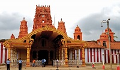
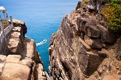

Most Visited

Colombo
Colombo, the capital of Sri Lanka, has a long history as a port on ancient east-west trade routes, ruled successively by the Portuguese, Dutch and British. That heritage is reflected in its its architecture, mixing colonial buildings with high-rises and shopping malls.



Jaffna
Jaffna is a city on the northern tip of Sri Lanka. Nallur Kandaswamy is a huge Hindu temple with golden arches and an ornate gopuram tower. By the coast, star-shaped Jaffna Fort was built by the Portuguese in the 17th century and later occupied by the Dutch and British. Jaffna Public Library is a symbol of the city’s post-war regeneration. Jaffna Archaeological Museum has Dutch cannons and pre-colonial artifacts. Weather: 27°C, Wind N at 18 km/h, 74% Humidity Province: Northern Province